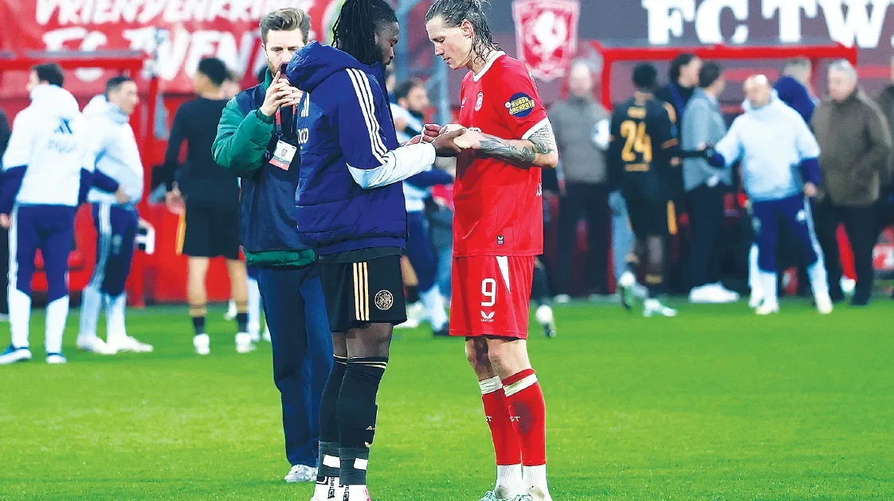

Security & Crime · 13 Nov 2026
Why I prayed with my opponent after match – Arokodare

Nigerian striker, Tolu Arokodare, explains why he shared a post-match prayer with an opponent, saying it was to thank God for an injury-free game. Read More: https://punchng.com/why-i-prayed-with-opponent-after-match-arokodare/
Multiple independent publishers are reporting on the same development: Why I prayed with my opponent after match – Arokodare.
The available reports place the development in the Security & Crime category. The accounts were compared for agreement on the central event rather than simply shared names or broad topics.
One of the available reports describes the development this way: Nigerian striker, Tolu Arokodare, explains why he shared a post-match prayer with an opponent, saying it was to thank God for an injury-free game. Read More: https://punchng.com/why-i-prayed-with-opponent-after-match-arokodare/
Readers should consult the linked source reports for additional context, updates and details that may change as the story develops.
Sources
This article was produced by the C. O. Eric AI Newsroom from the cited sources. It is published only after automated evidence and safety checks.